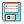

This panel sets up and displays a scatter plot of project properties for the selected entries.
The toolbar provides tools for manipulation of the plot and for saving an image of the plot. The toolbar buttons are described below.
|
|
Reset view
Reset the plot to the original pan and zoom settings.
|
|
|
Previous view
Display the previous view of the plot in the view history.
|
|
|
Next view
Display the next view of the plot in the view history.
|

|
Open Project Table
Opens or closes the
Project Table panel. |
|
|
Pick to include entries
Include entries in the Workspace by picking data points.
Clicking on a single point selects the point and deselects all others.
Dragging over points selects those points and deselects all others.
Shift-clicking adds a single point to the selection.
Shift-dragging over points adds the unselected points in the region to the
selection.
Control-clicking changes the selection of a single point without affecting the
selection of other points.
Control-dragging over points changes the selection of those points without
affecting the selection of other points.
|
|
|
Pick to select entries
Select entries in the Project Table by selecting data points. This is a useful
way of visually selecting entries based on their properties.
Clicking on a single point selects the point and deselects all others.
Dragging over points selects those points and deselects all others.
Shift-clicking adds a single point to the selection.
Shift-dragging over points adds the unselected points in the region to the
selection.
Control-clicking changes the selection of a single point without affecting the
selection of other points.
Control-dragging over points changes the selection of those points without
affecting the selection of other points.
|
|
|
Label points
Label points with the value of a project property. Clicking the button opens a
property selector, in which you can select a property for labeling the
points. When you have selected a property, its value is displayed when you pause
the pointer over a plot point. If you click on a plot point, it is selected for
labeling, and the label is displayed with an arrow pointing to the plot point.
Click again in the plot area to fix the position of the label. To delete the
label, click on the point again.
|
|
|
Pan and zoom
Pan the plot with the left mouse button, zoom with the right button.
|

|
Zoom to rectangle
Drag out a rectangle on the plot to zoom in to that rectangle.
|

|
Configure plot
Configure the margins and location of the plot image in the plotting area.
|
|

|
Save plot image
Save an image of the plot to file. Opens a file selector in which you can browse
to a location, select the image format, and name the image.
|
|
Show Controls or Hide
Controls
With this button you can hide or show the plot controls. The plot area expands
to fill the space left by hiding the controls.
|
This area displays the plot points. When the pointer is inside the plot, the coordinates at the pointer position are displayed at the upper right of the panel.
This area of the panel contains controls for each data set, and some controls for the overall plot.
- X-Axis option menu and Select button
-
Choose the property to be plotted on the x axis from this option menu, or click Select and choose the property in the property selector that opens.
- Y-Axis option menu and Select button
-
Choose the property to be plotted on the y axis from this option menu, or click Select and choose the property in the property selector that opens.
- Symbol option menus
-
Set the properties of the plot symbols with these option menus:
-
Color—Choose the color to be used for the plot symbols from this option menu. The color is applied if you do not use the Color by option menu to color points by a property value. The default is Black.
-
Size—Choose the size of the plot symbols from this option menu. The size is applied if you do not use the Symbol size by option menu to set the symbol size according to the values of a property.
-
Symbol—Choose the symbol shape to be used for the plot points from this option menu.
- Line option menus
-
Set the line style from these option menus.
-
Style—Choose the style for the line that is drawn between plot points. The default is None, meaning that no lines are drawn.
-
Width—Choose the width of the line that is drawn between plot points.
- option menu
-
Color—Choose the color of the line that is drawn between plot points. The default is Black.
- Color by option menu and Select button
-
Choose the property to be used to color the plot points from this option menu, or click Select and choose the property in the property selector that opens. When you have chosen a property, the Color map option menu and Color scale option become available.
- Color map option menu
-
Choose a color map to use for coloring the plot points by a property.
- Color scale option
-
Select this option to display the color scale to the right of the plot, as a vertical color bar with a scale of property values and a label identifying the property.
- Symbol size by option menu and Select button
-
Choose the property to be used to set the size of the plot symbols from this option menu, or click Select and choose the property in the property selector that opens. The size of the symbols is determined by the value of the property relative to its range for the plotted points.
- Best fit line option and text box
-
Display the line of best fit. The equation of the line and the value of R2 is displayed in the text box.
- Diagonal line with slope option and menu
-
Draw a diagonal line with the selected slope. The choices for the slope are 1 and −1.
- Equal aspect option
-
Select this option to use the same axis scale on both the x and y axes. This option should only be used when the properties on the two axes have approximately the same range of values, such as in an experimental versus predicted value scatter plot. Otherwise, the plot can become very narrow in one dimension or the other.
- Equalize axis range option
-
Select this option to use the same axis range on both the x and y axes. This option should only be used when the properties on the two axes have approximately the same range of values, such as in an experimental versus predicted value scatter plot. Otherwise, the plot points will not occupy much of the plot area, and the relation between the variables will not be evident.
- Legend option menu
-
Choose a location for the legend from this option menu, or None to hide the legend.
- Plot title option and text box
-
Select this option to add a title to the top of the plot area, and enter the title text in the text box.
- New Data Set button
-
Add a data set to the plot. A new tab with the data-related controls is added to the plot controls area.
- Delete Data Set button
-
Delete the data set whose tab is displayed.
- Axis Settings button
-
Open the Axis Settings dialog box, in which you can make choices for how the axes are displayed.